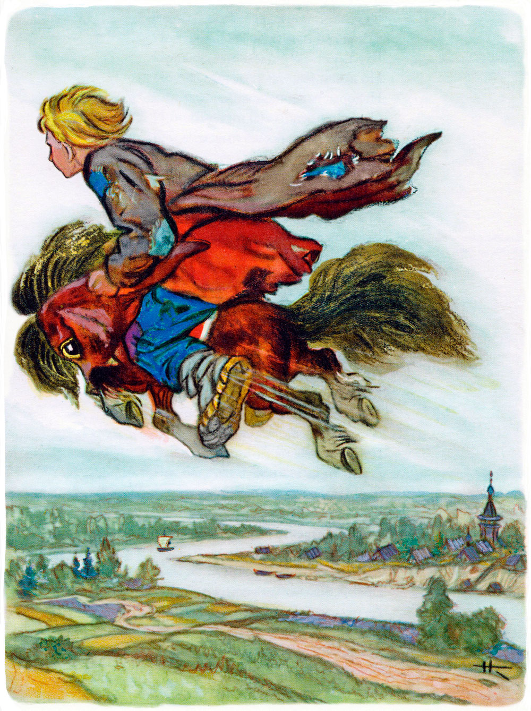
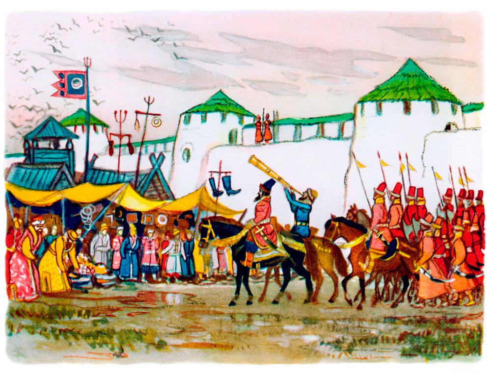
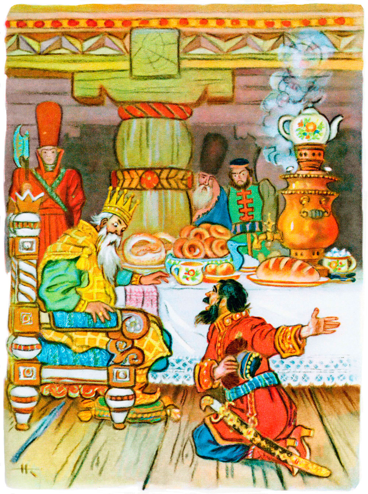

Конёк-горбунок - продолжение.
Петр Ершов
Вечер к ночи пробирался;
На ночлег Иван собрался;
Вдоль по улице идет,
Ест краюшку да поет.
Вот он поля достигает,
Руки в боки подпирает
И с прискочкой, словно пан,
Боком входит в балаган.
Все по-прежнему стояло,
Но коней как не бывало;
Лишь игрушка-горбунок
У его вертелся ног,
Хлопал с радости ушами
Да приплясывал ногами.
Как завоет тут Иван,
Опершись о балаган:
"Ой вы, кони буры-сивы,
Добры кони златогривы!
Я ль вас, други, не ласкал,
Да какой вас черт украл?
Чтоб пропасть ему, собаке!
Чтоб издохнуть в буераке!
Чтоб ему на том свету
Провалиться на мосту!
Ой вы, кони буры-сивы,
Добры кони златогривы!"
Тут конек ему заржал.
"Не тужи, Иван, - сказал, -
Велика беда, не спорю,
Но могу помочь я горю.
Ты на черта не клепли:
Братья коников свели.
Ну, да что болтать пустое,
Будь, Иванушка, в покое.
На меня скорей садись,
Только знай себе держись;
Я хоть росту небольшого,
Да сменю коня другого:
Как пущусь да побегу,
Так и беса настигу".
Тут конек пред ним ложится;
На конька Иван садится,
Уши в загреби берет,
Что есть мочушки ревет.
Горбунок-конек встряхнулся,
Встал на лапки, встрепенулся,
Хлопнул гривкой, захрапел
И стрелою полетел;
Только пыльными клубами
Вихорь вился под ногами.
И в два мига, коль не в миг,
Наш Иван воров настиг.
Братья, то есть, испугались,
Зачесались и замялись.
А Иван им стал кричать:
"Стыдно, братья, воровать!
Хоть Ивана вы умнее,
Да Иван-то вас честнее:
Он у вас коней не крал".
Старший, корчась, тут сказал:
"Дорогой наш брат Иваша,
Что переться - дело наше!
Но возьми же ты в расчет
Некорыстный наш живот.
Сколь пшеницы мы ни сеем,
Чуть насущный хлеб имеем.
А коли неурожай,
Так хоть в петлю полезай!
Вот в такой большой печали
Мы с Гаврилой толковали
Всю намеднишнюю ночь -
Чем бы горюшку помочь?
Так и этак мы вершили,
Наконец вот так решили:
Чтоб продать твоих коньков
Хоть за тысячу рублев.
А в спасибо, молвить к слову,
Привезти тебе обнову -
Красну шапку с позвонком
Да сапожки с каблучком.
Да к тому ж старик неможет,
Работать уже не может;
А ведь надо ж мыкать век, -
Сам ты умный человек!" -
"Ну, коль этак, так ступайте, -
Говорит Иван, - продайте
Златогривых два коня,
Да возьмите ж и меня".
Братья больно покосились,
Да нельзя же! согласились.
Стало на небе темнеть;
Воздух начал холодеть;
Вот, чтоб им не заблудиться,
Решено остановиться.
Под навесами ветвей
Привязали всех коней,
Принесли с естным лукошко,
Опохмелились немножко
И пошли, что боже даст,
Кто во что из них горазд.
Вот Данило вдруг приметил,
Что огонь вдали засветил.
На Гаврилу он взглянул,
Левым глазом подмигнул
И прикашлянул легонько,
Указав огонь тихонько;
Тут в затылке почесал,
"Эх, как темно! - он сказал. -
Хоть бы месяц этак в шутку
К нам проглянул на минутку,
Все бы легче. А теперь,
Право, хуже мы тетерь...
Да постой-ка... мне сдается,
Что дымок там светлый вьется...
Видишь, эвон!.. Так и есть!..
Вот бы курево развесть!
Чудо было б!.. А послушай,
Побегай-ка, брат Ванюша!
А, признаться, у меня
Ни огнива, ни кремня".
Сам же думает Данило:
"Чтоб тебя там задавило!"
А Гаврило говорит:
"Кто-петь знает, что горит!
Коль станичники пристали
Поминай его, как звали!"
Все пустяк для дурака.
Он садится на конька,
Бьет в круты бока ногами,
Теребит его руками,
Изо всех горланит сил...
Конь взвился, и след простыл.
"Буди с нами крестна сила! -
Закричал тогда Гаврило,
Оградясь крестом святым. -
Что за бес такой под ним!"
Огонек горит светлее,
Горбунок бежит скорее.
Вот уж он перед огнем.
Светит поле словно днем;
Чудный свет кругом струится,
Но не греет, не дымится.
Диву дался тут Иван.
"Что, - сказал он, - за шайтан!
Шапок с пять найдется свету,
А тепла и дыму нету;
Эко чудо-огонек!"

Говорит ему конек:
"Вот уж есть чему дивиться!
Тут лежит перо Жар-птицы,
Но для счастья своего
Не бери себе его.
Много, много непокою
Принесет оно с собою". -
"Говори ты! Как не так!" -
Про себя ворчит дурак;
И, подняв перо Жар-птицы,
Завернул его в тряпицы,
Тряпки в шапку положил
И конька поворотил.
Вот он к братьям приезжает
И на спрос их отвечает:
"Как туда я доскакал,
Пень горелый увидал;
Уж над ним я бился, бился,
Так что чуть не надсадился;
Раздувал его я с час -
Нет ведь, черт возьми, угас!"
Братья целу ночь не спали,
Над Иваном хохотали;
А Иван под воз присел,
Вплоть до утра прохрапел.
Тут коней они впрягали
И в столицу приезжали,
Становились в конный ряд,
Супротив больших палат.
В той столице был обычай:
Коль не скажет городничий -
Ничего не покупать,
Ничего не продавать.
Вот обедня наступает;
Городничий выезжает
В туфлях, в шапке меховой,
С сотней стражи городской.

Рядом едет с ним глашатый,
Длинноусый, бородатый;
Он в злату трубу трубит,
Громким голосом кричит:
"Гости! Лавки отпирайте,
Покупайте, продавайте.
А надсмотрщикам сидеть
Подле лавок и смотреть,
Чтобы не было содому,
Ни давежа, ни погрому,
И чтобы никой урод
Не обманывал народ!"
Гости лавки отпирают,
Люд крещеный закликают:
"Эй, честные господа,
К нам пожалуйте сюда!
Как у нас ли тары-бары,
Всяки разные товары!"
Покупальщики идут,
У гостей товар берут;
Гости денежки считают
Да надсмотрщикам мигают.
Между тем градской отряд
Приезжает в конный ряд;
Смотрит - давка от народу.
Нет ни выходу ни входу;
Так кишмя вот и кишат,
И смеются, и кричат.
Городничий удивился,
Что народ развеселился,
И приказ отряду дал,
Чтоб дорогу прочищал.
"Эй! вы, черти босоноги!
Прочь с дороги! прочь с дороги!"
Закричали усачи
И ударили в бичи.
Тут народ зашевелился,
Шапки снял и расступился.
Пред глазами конный ряд;
Два коня в ряду стоят,
Молодые, вороные,
Вьются гривы золотые,
В мелки кольца завитой,
Хвост струится золотой...
Наш старик, сколь ни был пылок,
Долго тер себе затылок.
"Чуден, - молвил, - божий свет,
Уж каких чудес в нем нет!"
Весь отряд тут поклонился,
Мудрой речи подивился.
Городничий между тем
Наказал престрого всем,
Чтоб коней не покупали,
Не зевали, не кричали;
Что он едет ко двору
Доложить о всем царю.
И, оставив часть отряда,
Он поехал для доклада.

Приезжает во дворец.
"Ты помилуй, царь-отец!-
Городничий восклицает
И всем телом упадает. -
Не вели меня казнить,
Прикажи мне говорить!"
Царь изволил молвить: "Ладно,
Говори, да только складно". -
"Как умею, расскажу:
Городничим я служу;
Верой-правдой исправляю
Эту должность..." - "Знаю, знаю!" -
"Вот сегодня, взяв отряд,
Я поехал в конный ряд.
Приезжаю - тьма народу!
Ну, ни выходу ни входу.
Что тут делать?.. Приказал
Гнать народ, чтоб не мешал.
Так и сталось, царь-надежа!
И поехал я - и что же?
Предо мною конный ряд;
Два коня в ряду стоят,
Молодые, вороные,
Вьются гривы золотые,
В мелки кольца завитой,
Хвост струится золотой,
И алмазные копыты
Крупным жемчугом обиты".
Царь не мог тут усидеть.
"Надо коней поглядеть, -
Говорит он, - да не худо
И завесть такое чудо.
Гей, повозку мне!" И вот
Уж повозка у ворот.
Царь умылся, нарядился
И на рынок покатился;
За царем стрельцов отряд.
Вот он въехал в конный ряд.
На колени все тут пали
И "ура" царю кричали.
Царь раскланялся и вмиг
Молодцом с повозки прыг...
Глаз своих с коней не сводит,
Справа, слева к ним заходит,
Словом ласковым зовет,
По спине их тихо бьет,
Треплет шею их крутую,
Гладит гриву золотую,
И, довольно засмотрясь,
Он спросил, оборотясь
К окружавшим: "Эй, ребята!
Чьи такие жеребята?
Кто хозяин?" Тут Иван,
Руки в боки, словно пан,
Из-за братьев выступает
И, надувшись, отвечает:

"Эта пара, царь, моя,
И хозяин - тоже я". -
"Ну, я пару покупаю!
Продаешь ты?" - "Нет, меняю". -
"Что в промен берешь добра?" -
"Два-пять шапок серебра". -
"То есть, это будет десять".
Царь тотчас велел отвесить
И, по милости своей,
Дал в прибавок пять рублей.
Царь-то был великодушный!
Повели коней в конюшни
Десять конюхов седых,
Все в нашивках золотых,
Все с цветными кушаками
И с сафьянными бичами.
Но дорогой, как на смех,
Кони с ног их сбили всех,
Все уздечки разорвали
И к Ивану прибежали.
Царь отправился назад,
Говорит ему: "Ну, брат,
Пара нашим не дается;
Делать нечего, придется
Во дворце тебе служить.
Будешь в золоте ходить,
В красно платье наряжаться,
Словно в масле сыр кататься,
Всю конюшенну мою
Я в приказ тебе даю,
Царско слово в том порука.
Что, согласен?" - "Эка штука!
Во дворце я буду жить,
Буду в золоте ходить,
В красно платье наряжаться,
Словно в масле сыр кататься,
Весь конюшенный завод
Царь в приказ мне отдает;
То есть, я из огорода
Стану царский воевода.
Чудно дело! Так и быть,
Стану, царь, тебе служить.
Только, чур, со мной не драться
И давать мне высыпаться,
А не то я был таков!"
Тут он кликнул скакунов
И пошел вдоль по столице,
Сам махая рукавицей,
И под песню дурака
Кони пляшут трепака;
А конек его - горбатко -
Так и ломится вприсядку,
К удивленью людям всем.
Два же брата между тем
Деньги царски получили,
В опояски их зашили,
Постучали ендовой
И отправились домой.
Дома дружно поделились,
Оба враз они женились,
Стали жить да поживать
Да Ивана поминать.
Но теперь мы их оставим,
Снова сказкой позабавим
Православных христиан,
Что наделал наш Иван,
Находясь во службе царской,
При конюшне государской;
Как в суседки он попал,
Как перо свое проспал,
Как хитро поймал Жар-птицу,
Как похитил Царь-девицу,
Как он ездил за кольцом,
Как был на небе послом,
Как он в солнцевом селенье
Киту выпросил прощенье;
Как, к числу других затей,
Спас он тридцать кораблей;
Как в котлах он не сварился,
Как красавцем учинился;
Словом: наша речь о том,
Как он сделался царем.
Продолжение следует